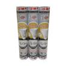

|

Hi-Qua Shuttlecock Kok Badminton - Silver [3 pack]
Fitur Produk
Speed 78 (Medium)
Karakter bulu runcing
1 slop isi 12 pcs
Dapat 3 Slop
Tahan lama dan awet
Harga Rp 297,000
|
Hi-Qua Shuttlecock Kok Badminton - Merah [3 pack]
Fitur Produk
Speed 78 (Medium)
Karakter bulu runcing
1 slop isi 12 pcs
Dapat 3 Slop
Tahan lama dan awet
Harga Rp 258,000
|
Victor Original X 900 Hypernano Raket Badminton
Fitur Produk
Raket badminton
Dapat mengurangi perlawanan udara secara signifikasi
Memberikan ayunan yang lebih cepat
Material : High Resilient Modulus Graphite + Nano Fortify TR + 6.8 Shaft & High Resilient Modulus Graphite + Nano Fortify TR + Hard Cored Technology
Harga Rp 2,414,000
|
Yonex ArcSaber 11 Raket Badminton
Fitur Produk
Raket badminton
Berfokus di bagian heavy head, sehingga ideal digunakan untuk permainan menyerang, khususnya melakukan smash pada pemain lawan
Material : Full carbon
Max Tarikan : 26 lbs
Senyawa (tanpa sambungan)
Harga Rp 310,000
|

Victor Junior Sepatu Badminton Pria - Orange Blue [A 960 DF]
Fitur Produk
Badminton shoes
Didesain sporty
Detail eyelets, neat stitching, dan outsole berkualitas
Teknologi Light Resilient EVA
Material : Feather resilient EVA, energymax 3.0, TPU, solid EVA, dan carbon power
Harga Rp 851,400
|
YONEX Men Match Plus Badminton Socks Kaos Kaki - Red [SKSMP1855SZZ]
Fitur Produk
Kaos kaki
Didesain sporty
Mudah menyerap keringat
Nyaman pada saat digunakan
Material : Berkualitas
Harga Rp 35,000
|
Victor T- Shirt Kaos Badminton Pria [AT-7000M Blue]
Fitur Produk
Short sleeves T-shirt
Desain sporty
Cocok dipakai bermain badminton ataupun buat jalan
Memiliki kualitas bahan Perfect DRY yang dapat menjaga tubuh Anda tetap kering dan sejuk dalam keadaan berkeringat sekalipun
Material : Polyester
Harga Rp 400,000
|
Flypower Kurawa 4 Celana Badminton Pria – Red
Fitur Produk
Short pants
Desain sporty
Printing batik parang pada bagian samping dan logo flypower pada bagian depan
Nyaman dikenakan saat berolahraga
Material : Polyester jersey
Harga Rp 119,000
|
|
Li-Ning Kaos Badminton Pria - Hitam [L-6028]
Fitur Produk
Short sleeves T-shirt
Didesain sporty
Round neckline
Kaos badminton ini memiliki kualitas bahan yang dapat menjaga tubuh Anda tetap kering dan sejuk dalam keadaan berkeringat sekalipun
Material : Polyester
Harga Rp 300,000
|
Li-Ning Kaos Badminton Pria - Black [L-6023A]
Fitur Produk
Short sleeves badminton T-shirt
Desain sporty
Dengan desain yang dipakai sebagai jersey kebesaran timnas bulutangkis/badminton China
Memiliki kualitas bahan yang dapat menjaga tubuh Anda tetap kering dan sejuk dalam keadaan berkeringat sekalipun
Material : Polyester berkualitas tinggi
Harga Rp 300,000
|

Li-Ning Kaos Badminton Pria - Blue [L-6023A]
Fitur Produk
Short sleeves badminton T-shirt
Desain sporty
Dengan desain yang dipakai sebagai jersey kebesaran timnas bulutangkis/badminton China
Memiliki kualitas bahan yang dapat menjaga tubuh Anda tetap kering dan sejuk dalam keadaan berkeringat sekalipun
Material : Polyester berkualitas tinggi
Harga Rp 300,000
|
Victor Sepatu Badminton A610ACE - Orange Green
Fitur Produk
Sepatu badminton
Didesain trendy & sporty
Outsole yang nyaman saat melakukan pergerakan
Ideal digunakan untuk berolahraga
Material : V-tough, double mesh dan, PU Leather
Harga Rp 2,100,000
|
|
Yang Yang Tas Multifungsi Backpack - Black SilverFitur
Fitur Produk
Backpack
Didesain trendy & sporty
Dengan kompartement utam yang luas, zipper opening, front zipper opening, side pocket, dan adjustable shoulder strap
Idea digunakan saat Anda berolahraga maupun untuk sehari-hari
Material : Polyester
Harga Rp 1,400,000
|
Flypower Kurawa 4 Celana Badminton – Blue
Fitur Produk
Short pants
Desain sporty
Printing batik parang pada bagian samping dan logo flypower pada bagian depan
Nyaman dikenakan saat berolahraga
Material : Polyester jersey
Harga Rp 119,000
|
Hiqua Thermobag Square Tas Olahraga – Biru
Fitur Produk
Tas olahraga
Kompartemen : 2 Resleting , 2 Ruang Besar untuk 12+ raket, 10 slop shuttlecock, dan 1 set pakaian olahraga, sepatu
Bahan Material : Polyester - PVC dan Nylon, Thermobag system
1 Ruang thermobag guna menjaga kestabilan suhu ruangan tas
Terbuat dari material yang tahan air
Harga Rp 320,000
|
Waldos Sports Apparel Knee Supporter Pelindung Lutut
Fitur Produk
Pelindung lutut
Didesain comfy
Melindungi lutut Anda saat berolahraga
Strap fleksibel untuk mengatur ukuran supporter agar pas di lutut
Material : Fleece cotton
Harga Rp 79,900
|
|
Flypower Zamrud 5 Tas Raket - Red Blue
Fitur Produk
Tas olahraga badminton
Dapat menampung hingga 6 racket
Memiliki main compartment yang luas, sehingga memudahkan Anda membawa peralatan olahraga seperti sepatu, shuttlecock, handuk, pakaian ganti, dan lain-lain, dan tempat penyimpanan raket yg cukup luas
Material : PVC, Nylon, PU & Thermopack
Size : 74 x 22 x 32 cm
Harga Rp 679,000
|
Li Ning Woods N80 Raket Badminton
Fitur Produk
Raket badminton
Dirancang melalui perhitungan sitematik, membuat raket ini memiliki hambatan udara yang rendah
Meningkatkan performa permainan untuk segala tipe baik bertahan dan menyerang
Tarikan senar sampai 30Lbs
Material : Carbon
Harga Rp 1,800,000
|
Victor Brave Sword 1900 E Raket Badminton - Orange + Free Senar + Tas Cover + Grip Karet
Fitur Produk
Raket badminton
Dapat mengurangi perlawanan udara secara signifikasi
Memberikan ayunan yang lebih cepat
Dipasang dengan senar dan tarikan metode 4 simpul yang sudah dipakai para pemain dunia
Material : Graphite + Resin + 7.0 shaft
Harga Rp 652,000
|
Enlio Tiang Badminton Portable [180 kg]
Fitur Produk
Tiang portable
Desain ilmiah, nyaman dan aman
Untuk menahan net badminton
Mudah untuk bergerak dengan desain layering dan mounting roller
Material : Besi
Harga Rp 20,000,000
|
|
Weekend Deal - Paket Hi-Qua New Ultra BM 9000 Stiff [Raket Badminton/Tas/Kaos/Senar]
Fitur Produk
Balance point 280-295mm
Panjang 67cm
Rec. Tension : 30 lbs
Bahan : High Modulus Graphite,Medium Flex,Max Power Technology
Cocok untuk bermain all around
Bonus Tas, Senar, Kaos (warna random, ukuran kaos M-XL random), namun kami sesuaikan dengan gender cowok-cewek
Harga Rp 390,000
|
Victor Wrist Band [SP 123 D]
Fitur Produk
Wristband
Berfungsi untuk menahan keringat di pergelangan tangan, sehingga pegangan raket tidak licin
Dengan detail embroidery logo victor
Cocok untuk melengkapi koleksi merchandise Anda
Material : Cotton + polyester + Elastic + Spandex
Harga Rp 38,000
|

Victor Spiderman Limited Edition Peralatan Badminton
Fitur Produk
Raket badminton
Didesain dalam spiderman limited edition
Ultra high modulus graphite, nano resin dan hard cored technology, anti torsi
Sehingga memberikan stabilitas racket lebih baik, mengurangi hambatan udara, dan meningkatkan kekuasaan dan kontrol menyerang
Harga Rp 3,420,000
|
Yonex Feather AERO CLUB 33 Shuttlecock SHUACB33ZZZZ
Fitur Produk
Shuttlecock
Didesain sporty>
Dirancang dengan kecepatan, jarak, kinerja yang stabil sekalipun dilingkungan berbeda
Ideal untuk melengkapi perlengkapan badminton Anda
Material : Feather
Harga Rp 368,100
|
|
Yonex Badminton Nets Jaring Badminton BN-141NB BNTBN152CPRO-ZZZZZZ-ZZZZ
Fitur Produk
Net badminton
Dilengkapi dengan tali terbuat dari bahan nylon untuk mengikat pada bagian atas dan bawah net
Material : Nylon
Ukuran : 602 x 84 x 1.9 cm
Harga Rp 266,900
|
Yonex Water Bottles (SVR-WB550-HS2124-3035B)
Fitur Produk
Botol minum
Didesain sporty & ergonomic
Cocok dibawa saat Anda sedang berolahraga
Ideal untuk melengkapi aksesoris badminton Anda
Harga Rp 84,150
|
Flypower BE 420 Mesin Senar Digital – Blue
Fitur Produk
Mesin Senar Digital
Dapat digunakan untuk berbagai macam type raket, nyaman digunakan dan dilengkapi dengan toolkit
Memiliki stuktur lebih baik dengan sensor yang dapat mengurangi tingkat kerusakan
Dilengkapi LED untuk display, sehingga lebih hemat daya
Menggunakan adaptor catu daya. Cocok untuk voltase daya di seluruh dunia
Harga Rp 46,000,000
|
Flypower Badminton Shooting Machine – Black
Fitur Produk
Badminton Shooting Machine Suit for : Beginner and professional Full Function Remot Control LCD Display
Speed & Frequency Adjustable Voltage : AC(110-240V)���DC(12V)
Power/current : Power consumption���20-140 w/h
Serve style : Build out Elevation : 42 derajat ���4 adjusting gear��� Horizontal angle : 30°���Auto oscillation���
Lifting adjust : Fixed and adjustable 20-70cm
Harga Rp 28,000,000
|
|
|
Yonex Badminton Shoes Pria - Black (SRCR-75 Black)
Fitur Produk
Sepatu badminton
Didesain sporty
Dirancang dengan outsole berkualitas tinggi dan cushioning
Memberikan pergerakan yang ringan saat bermain di lapangan
Material : P.U. Leather Polyester Mesh
Harga Rp 322,150
|
Garsel Sepatu Badminton Pria [GRE 7754]
Fitur Produk
Sepatu badminton
Didesain sporty
Eyelets, neat stitching dan PHYLON+Karet outsole
Mampu meningkatkan traksi serta memaksimalkan pijakan saat bermain badminton
Material : Sintetis
Harga Rp 191,000
|
|